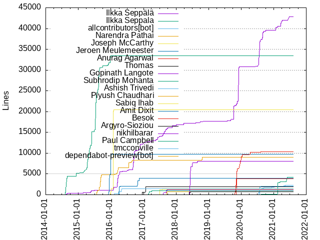
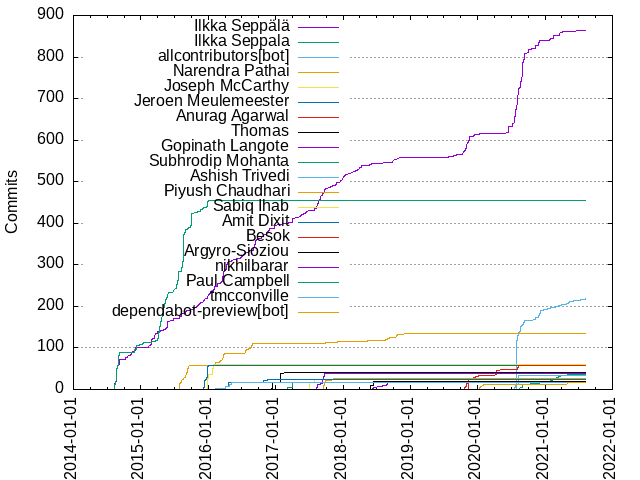

Authors
| Author | Commits (%) | + lines | - lines | First commit | Last commit | Age | Active days | # by commits |
|---|
| Ilkka Seppälä | 864 (27.69%) | 42851 | 27666 | 2014-08-09 | 2021-07-25 | 2541 days, 19:06:25 | 378 | 1 |
| Ilkka Seppala | 454 (14.55%) | 33479 | 13854 | 2014-08-09 | 2016-01-01 | 510 days, 0:01:20 | 109 | 2 |
| allcontributors[bot] | 218 (6.99%) | 2309 | 426 | 2020-07-27 | 2021-08-08 | 376 days, 18:54:05 | 54 | 3 |
| Narendra Pathai | 134 (4.29%) | 9005 | 4234 | 2015-07-25 | 2018-12-03 | 1227 days, 2:00:08 | 68 | 4 |
| Joseph McCarthy | 61 (1.96%) | 20458 | 1419 | 2015-12-26 | 2016-02-01 | 36 days, 20:51:53 | 13 | 5 |
| Jeroen Meulemeester | 58 (1.86%) | 9745 | 477 | 2015-12-06 | 2016-02-03 | 58 days, 17:32:18 | 19 | 6 |
| Anurag Agarwal | 57 (1.83%) | 10396 | 11857 | 2019-11-09 | 2020-08-08 | 272 days, 17:53:12 | 19 | 7 |
| Thomas | 42 (1.35%) | 1976 | 1049 | 2016-11-14 | 2017-03-18 | 123 days, 17:18:39 | 7 | 8 |
| Gopinath Langote | 38 (1.22%) | 1155 | 131 | 2017-08-09 | 2017-09-22 | 44 days, 9:35:40 | 12 | 9 |
| Subhrodip Mohanta | 36 (1.15%) | 4197 | 2071 | 2020-08-16 | 2021-05-31 | 288 days, 12:27:34 | 25 | 10 |
| Ashish Trivedi | 34 (1.09%) | 2008 | 625 | 2020-07-19 | 2020-08-10 | 22 days, 8:52:30 | 5 | 11 |
| Piyush Chaudhari | 26 (0.83%) | 780 | 87 | 2017-09-16 | 2017-11-12 | 56 days, 21:29:21 | 9 | 12 |
| Sabiq Ihab | 24 (0.77%) | 1322 | 180 | 2017-06-20 | 2017-07-29 | 38 days, 14:56:26 | 8 | 13 |
| Amit Dixit | 24 (0.77%) | 3928 | 2434 | 2016-03-29 | 2016-12-01 | 246 days, 22:53:35 | 10 | 14 |
| Besok | 20 (0.64%) | 3906 | 1301 | 2019-10-19 | 2019-11-13 | 25 days, 4:43:11 | 9 | 15 |
| Argyro-Sioziou | 19 (0.61%) | 683 | 191 | 2018-05-27 | 2018-06-14 | 18 days, 3:23:21 | 3 | 16 |
| nikhilbarar | 18 (0.58%) | 8096 | 478 | 2018-06-10 | 2018-09-08 | 89 days, 20:00:01 | 11 | 17 |
| Paul Campbell | 18 (0.58%) | 970 | 76 | 2017-03-03 | 2017-04-16 | 43 days, 10:53:07 | 4 | 18 |
| tmcconville | 17 (0.54%) | 1462 | 189 | 2016-02-08 | 2016-05-04 | 86 days, 0:36:04 | 5 | 19 |
| dependabot-preview[bot] | 16 (0.51%) | 15 | 15 | 2020-01-08 | 2021-05-01 | 478 days, 9:42:56 | 8 | 20 |
These didn't make it to the top: WSSIA, Colin But, saksham93, JuhoKang, joshzambales, Dheeraj Mummareddy, ruslanpa, cfarrugia, Mohammed Ezzat, Crossy147, Markus Moser, zafarella, gwildor28, adkm, Toxic Dreamz, Samil Ayoub, Richard Jones, Kamil Pietruszka, swarajsaaj, kapinuss, Ovidijus Okinskas, NooBxGockeL, Mihály Kuprivecz, GVSharma, amit2103, Robert Kasperczyk, Markus, Josh, Ankur Kaushal, Aleksandar Dudukovic, qza, llitfkitfk, hoswey, Tapio Rautonen, SrdjanPaunovic, Peter G. Sideris, mahendran.mookkiah, mafagafogigante, igeligel, Zafar Khaydarov, Vladislav Golubinov, Tschis, Serdar Hamzaoğulları, George Aristy, Deepanshu Rastogi, Chandana Amarnath, vehpsr, giorgosmav21, daniel-bryla, Yusuf Aytaş, ThatGuyWithTheHat, Sia Wai Suan, Rakesh Venkatesh, Mike Liu, Hemant Bothra, Azureyjt, 余林颖, yusufaytas, waisuan, tigraboris, pitsios-s, mfarid, leogtzr, Zhang WH, Wei Seng, Hannes Pernpeintner, Dominik Gruntz, Christopher O'Connell, Christoffer Hamberg, AnaghaSasikumar, Alan, kanwarpreet25, chris, alwayswithme, Per Wramdemark, Mike, Michal Krzywanski, Leon Mak, Evan Sia Wai Suan, Bernardo Sulzbach, Anurag870, Amit Garg, 4lexis, 靳阳, jack.zhang, hoangnam2261, hoangNam, baislsl, adamski.pro, Stamatis Pitsios, Srđan Paunović, Ranjeet, Pavel Manannikov, Mitchell Irvin, Matt Dolan, M Saif Asif, Luigi Cortese, Kirill Vlasov, Katarzyna Rzepecka, Juan Manuel Suárez, Jon Ingi Sveinbjornsson, Dmitry Avershin, Deng, Boris, Ashish_Trivedi, Arpit Jain, Agustí Becerra Milà, ytian90, wangliang, staillebois, protopapa, prafful1, mortezaadi, mbirkenkamp, lbroman, jinishavora, ignite1771, dzmitryh, codinghog, anthonycampbell, adam.kaczmmarek@gmail.com, Yosfik Alqadri, Wes Gilleland, VR, Tom.TH.Lin, Sumit Yadav, Sujan Reddy Annem, Sanket, Rodolfo Forte, Przemek Nowak, Piyush Kailash Chaudhari, Noam Greenshtain, Matt, Martin Vandenbussche, Mahendran Mookkiah, Krisztián Nagy, Kai Winter, Joshua Jimenez, Harshrajsinh Thakor, Halil Demir, Dos Debug, Dmitriy Zarubin, Christian Cygnus, CF, Artur Mogozov, Amarnath Chandana, Alexandru Somai, Alexander Ivanov, zenuo, zWeBrain, yonghong Xu, yichen88, yejinchang, yato, warp125, venkatrs-ch197, valery1707, va1m, tainarareis, snehalatapandit, slawiko, siavash, shumyk, shaiktaj, saritchie, ruchpeanuts, rrhodes, rayyh, ptrax, pierDipi, pelmegov, olcbean, noragami, neonds, mxi1809, matthew, karthikbhat13, josejhgjghjghjghjghj, hongsw, gitlocalize-app[bot], erikgajdos1997, dongshengchen, dependabot[bot], bordoisila1, amit1307, Zoltán Reegn, ZhouSky, Zack Beach, Yuming Zhu, Yu Tian, Yongzhi Yang, Xenilo137, Vivek Singh, VarunVats9, Vadym Pechenoha, Thiago Medeiros, The Gitter Badger, Tao, Sunil Mogadati, Stefan Birkner, Slava Shchaurouski, Simon Legner, Sharad Paul, Sanket Panhale, Samuel Souza, Saiful Islam, S177LM, S Sethi, Ryan Guest, Rohit Singh, Petros G. Sideris, Peter-Morawski, Paweł Matejko, Pawel Zawitowski, Omar Karazoun, Oleg, OCN.Yang, Nick Andrievsky, Mudit Porwal, Moustafa Farhat, MottoX, Milena Sapunova, Mike Kobit, Mike Giovenco, Michele Giacobazzi, Michael Ernst, Maxim Galushka, Matthew Dean, Matthew, Martel Richard, Marlo Henrique, Magesh Khanna Vadivelu, MSaifAsif, Lyndon Armitage, Lulzx, Lucas Prone, Leonóra Dér, Krandelbord, Kevin Woodland, Kevin O'Neal, Kevin Lee, KHADIR Tayeb, Juan Manuel Abate, Jonathan Leitschuh, Jonathan Lao-kan, James Roland, Jacob Hell, JackieNim, JaXt0r, Igor C. A. de Lima, Ibrahim ali abdelghany, Hùng (Huka) L. K. Nguyễn, HelloCoCooo, Hasan Serdar Hamzaoğulları, Girish Kulkarni, Gaurav Deshpande, Fedor Skvorcov, Fedor, Fabrice Bellingard, Eric Riese, Elvys Soares, Edy Cu Tjong, EdisonE3, Domenico Sibilio, Diffblue assistant, Denise, Daniel, Dan Siwiec, DRad, Christoph Flick, Chris Farrugia, Chang Liu, Chandan Rai, Carlos Romero, Brandon D. McKay, Bethan Palmer, BeeHuang, Bartek, Aravind M, Anirudh, Angel_Kitty, AndriyPyzh, Andrew Feng, Anandhu Gopi, Amit Dash, Amit Bhoraniya, Alexander Iskuskov, Alain, Adrian Yao, Aditya Pal
Only top 20 authors shown
Only top 20 authors shown
| Month | Author | Commits (%) | Next top 5 | Number of authors |
|---|
| 2021-08 | karthikbhat13 | 1 (33.33% of 3) | allcontributors[bot], Mike Liu | 3 |
| 2021-07 | allcontributors[bot] | 2 (40.00% of 5) | Marlo Henrique, Ilkka Seppälä, AndriyPyzh | 4 |
| 2021-06 | allcontributors[bot] | 3 (33.33% of 9) | Ilkka Seppälä, jinishavora, Xenilo137, Samuel Souza, Juan Manuel Abate | 6 |
| 2021-05 | allcontributors[bot] | 4 (23.53% of 17) | 余林颖, dependabot-preview[bot], VR, Subhrodip Mohanta, Tao | 9 |
| 2021-04 | allcontributors[bot] | 4 (25.00% of 16) | 余林颖, Ilkka Seppälä, zWeBrain, dependabot[bot], dependabot-preview[bot] | 11 |
| 2021-03 | Subhrodip Mohanta | 7 (26.92% of 26) | Ilkka Seppälä, allcontributors[bot], CF, yonghong Xu, va1m | 9 |
| 2021-02 | Ilkka Seppälä | 7 (41.18% of 17) | Subhrodip Mohanta, allcontributors[bot], Moustafa Farhat, Mike Liu, Martel Richard | 6 |
| 2021-01 | allcontributors[bot] | 5 (26.32% of 19) | Ilkka Seppälä, Subhrodip Mohanta, ignite1771, Rohit Singh, KHADIR Tayeb | 7 |
| 2020-12 | allcontributors[bot] | 11 (45.83% of 24) | Subhrodip Mohanta, Mike Liu, Ilkka Seppälä, Anurag870, warp125 | 10 |
| 2020-11 | Ilkka Seppälä | 18 (51.43% of 35) | allcontributors[bot], Pavel Manannikov, Girish Kulkarni | 4 |
| 2020-10 | Ilkka Seppälä | 10 (38.46% of 26) | swarajsaaj, Subhrodip Mohanta, allcontributors[bot], rrhodes, Rakesh Venkatesh | 8 |
| 2020-09 | Ilkka Seppälä | 31 (43.66% of 71) | Samil Ayoub, allcontributors[bot], Vladislav Golubinov, swarajsaaj, Mike | 11 |
| 2020-08 | Ilkka Seppälä | 95 (44.60% of 213) | allcontributors[bot], Ashish Trivedi, Toxic Dreamz, Subhrodip Mohanta, Anurag Agarwal | 17 |
| 2020-07 | allcontributors[bot] | 119 (63.98% of 186) | Ilkka Seppälä, Ashish Trivedi, gitlocalize-app[bot], amit1307, ZhouSky | 7 |
| 2020-06 | Ilkka Seppälä | 15 (100.00% of 15) | | 1 |
| 2020-05 | venkatrs-ch197 | 1 (25.00% of 4) | Zhang WH, Anurag Agarwal, Alexander Iskuskov | 4 |
| 2020-04 | Anurag Agarwal | 12 (92.31% of 13) | Zhang WH | 2 |
| 2020-03 | saksham93 | 10 (55.56% of 18) | dependabot-preview[bot], Zhang WH, yichen88, Jonathan Leitschuh, Jacob Hell | 7 |
| 2020-02 | saksham93 | 3 (50.00% of 6) | dependabot-preview[bot] | 2 |
| 2020-01 | dependabot-preview[bot] | 8 (50.00% of 16) | Anurag Agarwal, Ilkka Seppälä, saksham93, Lulzx, Angel_Kitty | 6 |
| 2019-12 | Ilkka Seppälä | 5 (41.67% of 12) | Anurag Agarwal, Hemant Bothra, Azureyjt | 4 |
| 2019-11 | Anurag Agarwal | 27 (36.49% of 74) | Ilkka Seppälä, Besok, Dominik Gruntz, Martin Vandenbussche, Boris | 9 |
| 2019-10 | Ilkka Seppälä | 23 (27.06% of 85) | GVSharma, Besok, Christopher O'Connell, Per Wramdemark, Leon Mak | 28 |
| 2019-09 | Ilkka Seppälä | 3 (23.08% of 13) | Hemant Bothra, snehalatapandit, saksham93, dongshengchen, Zhang WH | 10 |
| 2019-08 | Ranjeet | 2 (40.00% of 5) | Ilkka Seppälä, Aravind M | 3 |
| 2019-07 | kanwarpreet25 | 2 (15.38% of 13) | hoangnam2261, AnaghaSasikumar, ptrax, pierDipi, Thiago Medeiros | 10 |
| 2019-04 | saritchie | 1 (100.00% of 1) | | 1 |
| 2019-02 | kanwarpreet25 | 2 (28.57% of 7) | AnaghaSasikumar, Rodolfo Forte, Lucas Prone, Ilkka Seppälä | 5 |
| 2018-12 | Narendra Pathai | 1 (33.33% of 3) | Edy Cu Tjong, AnaghaSasikumar | 3 |
| 2018-11 | hoangnam2261 | 1 (33.33% of 3) | Ilkka Seppälä, Anandhu Gopi | 3 |
| 2018-10 | Narendra Pathai | 7 (38.89% of 18) | Ilkka Seppälä, hoangNam, staillebois, Paweł Matejko | 5 |
| 2018-09 | Ilkka Seppälä | 5 (31.25% of 16) | nikhilbarar, Narendra Pathai, Nick Andrievsky, Lyndon Armitage, Eric Riese | 6 |
| 2018-08 | nikhilbarar | 6 (30.00% of 20) | Narendra Pathai, Mitchell Irvin, Ilkka Seppälä, mxi1809, bordoisila1 | 8 |
| 2018-07 | nikhilbarar | 3 (37.50% of 8) | Agustí Becerra Milà, zenuo, Ilkka Seppälä | 4 |
| 2018-06 | Ovidijus Okinskas | 10 (35.71% of 28) | Argyro-Sioziou, nikhilbarar, Ilkka Seppälä, Narendra Pathai | 5 |
| 2018-05 | Argyro-Sioziou | 9 (39.13% of 23) | giorgosmav21, Evan Sia Wai Suan, Narendra Pathai, Christian Cygnus, Ilkka Seppälä | 6 |
| 2018-04 | Ilkka Seppälä | 5 (41.67% of 12) | Dheeraj Mummareddy, pelmegov, MottoX, Milena Sapunova, Michael Ernst | 6 |
| 2018-03 | Ilkka Seppälä | 10 (31.25% of 32) | Dheeraj Mummareddy, Juan Manuel Suárez, anthonycampbell, Wes Gilleland, valery1707 | 10 |
| 2018-02 | Ilkka Seppälä | 5 (38.46% of 13) | Sia Wai Suan, baislsl, Ryan Guest, Dheeraj Mummareddy | 5 |
| 2018-01 | Ilkka Seppälä | 12 (42.86% of 28) | tigraboris, Deng, olcbean, Zafar Khaydarov, Sanket Panhale | 11 |
| 2017-12 | Ilkka Seppälä | 11 (31.43% of 35) | George Aristy, ThatGuyWithTheHat, Tschis, 靳阳, Zafar Khaydarov | 9 |
| 2017-11 | Ilkka Seppälä | 8 (38.10% of 21) | Tschis, Piyush Chaudhari, codinghog, adam.kaczmmarek@gmail.com, Zafar Khaydarov | 8 |
| 2017-10 | adkm | 11 (39.29% of 28) | Ilkka Seppälä, Yosfik Alqadri, Piyush Chaudhari, Narendra Pathai, 靳阳 | 11 |
| 2017-09 | Ilkka Seppälä | 24 (26.67% of 90) | Gopinath Langote, Piyush Chaudhari, Deepanshu Rastogi, mahendran.mookkiah, Dos Debug | 16 |
| 2017-08 | Ilkka Seppälä | 25 (48.08% of 52) | Gopinath Langote, Serdar Hamzaoğulları, mahendran.mookkiah, Igor C. A. de Lima, Hasan Serdar Hamzaoğulları | 7 |
| 2017-07 | Sabiq Ihab | 7 (53.85% of 13) | Ilkka Seppälä, mahendran.mookkiah, Kevin Woodland | 4 |
| 2017-06 | Sabiq Ihab | 17 (51.52% of 33) | Ilkka Seppälä, SrdjanPaunovic, Srđan Paunović, Harshrajsinh Thakor, prafful1 | 6 |
| 2017-05 | Ilkka Seppälä | 8 (21.05% of 38) | kapinuss, Aleksandar Dudukovic, SrdjanPaunovic, Mihály Kuprivecz, 4lexis | 10 |
| 2017-04 | Paul Campbell | 14 (31.82% of 44) | Ilkka Seppälä, Mihály Kuprivecz, kapinuss, ytian90, Aleksandar Dudukovic | 10 |
| 2017-03 | Kamil Pietruszka | 9 (42.86% of 21) | Paul Campbell, Thomas, Ilkka Seppälä, Robert Kasperczyk, NooBxGockeL | 8 |
| 2017-02 | Ilkka Seppälä | 2 (50.00% of 4) | Thomas, Robert Kasperczyk | 3 |
| 2017-01 | Thomas | 22 (59.46% of 37) | Robert Kasperczyk, leogtzr, Ilkka Seppälä, Katarzyna Rzepecka | 5 |
| 2016-12 | Thomas | 16 (55.17% of 29) | Ilkka Seppälä, leogtzr, Krisztián Nagy, Amit Dixit | 5 |
| 2016-11 | Ilkka Seppälä | 16 (48.48% of 33) | Chandana Amarnath, daniel-bryla, Amit Dixit, Amarnath Chandana, Thomas | 7 |
| 2016-10 | Ilkka Seppälä | 8 (22.86% of 35) | igeligel, WSSIA, Amit Dixit, Dmitry Avershin, dzmitryh | 9 |
| 2016-09 | Ilkka Seppälä | 28 (66.67% of 42) | WSSIA, Christoffer Hamberg, Markus Moser, NooBxGockeL | 5 |
| 2016-08 | Narendra Pathai | 15 (40.54% of 37) | Ilkka Seppälä, WSSIA, NooBxGockeL, Markus Moser, Sumit Yadav | 8 |
| 2016-07 | Ilkka Seppälä | 10 (33.33% of 30) | Narendra Pathai, Colin But, Przemek Nowak, Kamil Pietruszka | 5 |
| 2016-06 | Colin But | 8 (34.78% of 23) | qza, Ilkka Seppälä, protopapa | 4 |
| 2016-05 | tmcconville | 5 (41.67% of 12) | Ilkka Seppälä, qza, VarunVats9 | 4 |
| 2016-04 | Ilkka Seppälä | 23 (40.35% of 57) | Amit Dixit, tmcconville, gwildor28, Markus Moser | 5 |
| 2016-03 | Ilkka Seppälä | 30 (49.18% of 61) | Narendra Pathai, gwildor28, slawiko, Slava Shchaurouski, Saiful Islam | 9 |
| 2016-02 | Ilkka Seppälä | 16 (25.00% of 64) | Crossy147, Mohammed Ezzat, Narendra Pathai, JuhoKang, Joseph McCarthy | 10 |
| 2016-01 | Joseph McCarthy | 30 (42.86% of 70) | Ilkka Seppälä, JuhoKang, hoswey, cfarrugia, Mohammed Ezzat | 15 |
| 2015-12 | Jeroen Meulemeester | 56 (42.75% of 131) | Joseph McCarthy, Ilkka Seppala, Ilkka Seppälä, cfarrugia, Zafar Khaydarov | 11 |
| 2015-11 | Ilkka Seppälä | 11 (20.00% of 55) | Ankur Kaushal, Ilkka Seppala, cfarrugia, mfarid, hoswey | 11 |
| 2015-10 | Ilkka Seppala | 31 (48.44% of 64) | Richard Jones, amit2103, Ilkka Seppälä, waisuan, hongsw | 9 |
| 2015-09 | Narendra Pathai | 28 (38.89% of 72) | Ilkka Seppala, zafarella, Ilkka Seppälä, Alan, Markus | 10 |
| 2015-08 | Ilkka Seppala | 97 (70.29% of 138) | Narendra Pathai, Ilkka Seppälä, Markus, Bernardo Sulzbach, zafarella | 9 |
| 2015-07 | Ilkka Seppala | 43 (61.43% of 70) | Narendra Pathai, Tapio Rautonen, Ilkka Seppälä | 4 |
| 2015-06 | Ilkka Seppala | 7 (53.85% of 13) | Ilkka Seppälä | 2 |
| 2015-05 | Ilkka Seppala | 51 (68.92% of 74) | Ilkka Seppälä, Magesh Khanna Vadivelu, Daniel | 4 |
| 2015-04 | Ilkka Seppala | 60 (63.16% of 95) | joshzambales, Josh, Ilkka Seppälä, jack.zhang, wangliang | 8 |
| 2015-03 | Ilkka Seppälä | 18 (54.55% of 33) | Ilkka Seppala, vehpsr, mbirkenkamp | 4 |
| 2015-02 | Ilkka Seppälä | 20 (58.82% of 34) | ruslanpa, Ilkka Seppala | 3 |
| 2015-01 | Ilkka Seppala | 5 (100.00% of 5) | | 1 |
| 2014-12 | Ilkka Seppala | 12 (31.58% of 38) | Peter G. Sideris, Ilkka Seppälä, M Saif Asif, mortezaadi, llitfkitfk | 10 |
| 2014-11 | Ilkka Seppälä | 11 (29.73% of 37) | Ilkka Seppala, mafagafogigante, llitfkitfk, alwayswithme, Jon Ingi Sveinbjornsson | 10 |
| 2014-10 | Ilkka Seppälä | 9 (45.00% of 20) | mafagafogigante, llitfkitfk, Sujan Reddy Annem, matthew, Stamatis Pitsios | 7 |
| 2014-09 | Ilkka Seppälä | 14 (36.84% of 38) | Ilkka Seppala, Yusuf Aytaş, yusufaytas, pitsios-s, Stamatis Pitsios | 6 |
| 2014-08 | Ilkka Seppala | 82 (58.16% of 141) | Ilkka Seppälä | 2 |
| Year | Author | Commits (%) | Next top 5 | Number of authors |
|---|
| 2021 | allcontributors[bot] | 26 (23.21% of 112) | Ilkka Seppälä, Subhrodip Mohanta, 余林颖, dependabot-preview[bot], Mike Liu | 32 |
| 2020 | Ilkka Seppälä | 226 (36.04% of 627) | allcontributors[bot], Ashish Trivedi, Anurag Agarwal, Subhrodip Mohanta, saksham93 | 47 |
| 2019 | Ilkka Seppälä | 56 (26.67% of 210) | Anurag Agarwal, Besok, GVSharma, Hemant Bothra, Azureyjt | 52 |
| 2018 | Ilkka Seppälä | 50 (24.51% of 204) | Narendra Pathai, Argyro-Sioziou, nikhilbarar, Dheeraj Mummareddy, Ovidijus Okinskas | 48 |
| 2017 | Ilkka Seppälä | 113 (27.16% of 416) | Gopinath Langote, Piyush Chaudhari, Thomas, Sabiq Ihab, Paul Campbell | 59 |
| 2016 | Ilkka Seppälä | 171 (34.69% of 493) | Narendra Pathai, Joseph McCarthy, Amit Dixit, tmcconville, Thomas | 45 |
| 2015 | Ilkka Seppala | 344 (43.88% of 784) | Ilkka Seppälä, Narendra Pathai, Jeroen Meulemeester, Joseph McCarthy, joshzambales | 44 |
| 2014 | Ilkka Seppala | 108 (39.42% of 274) | Ilkka Seppälä, llitfkitfk, Peter G. Sideris, mafagafogigante, Yusuf Aytaş | 23 |
| Domains | Total (%) |
|---|
| gmail.com | 1648 (52.82%) |
|---|
| users.noreply.github.com | 587 (18.81%) |
|---|
| gofore.com | 354 (11.35%) |
|---|
| outlook.com | 45 (1.44%) |
|---|
| t-online.de | 42 (1.35%) |
|---|
| thoughtworks.com | 30 (0.96%) |
|---|
| yahoo.com | 27 (0.87%) |
|---|
| hotmail.com | 26 (0.83%) |
|---|
| hotmail.fr | 24 (0.77%) |
|---|
| obf.ateneo.edu | 23 (0.74%) |
|---|